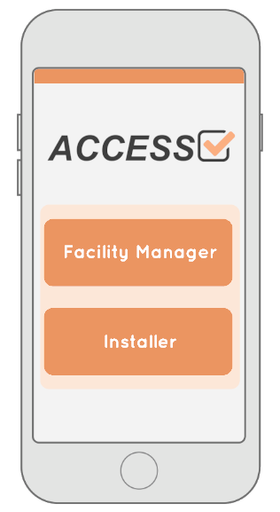

Date - August to October 2018
Problem - A company that made paper towel and related products wanted rebrand themselves as more inclusive and have that reflected in their products
Design - An app that helped facility managers and installers with find and placing the correct products to increase inclusivity.
Role - Design Student
Responsibilities:
- Brand Redesign
- User Studies
- Prototyping
Brand Redesign

As this project was not just about designing a product, but to design an entire brand we were introduced to tools to help with that. For example we conducted competitor brand analysis together with moodboards to understand what was important aspect to our brands and its competitors.

At the end of the project we had created a new Brand Platform for Access, and had written a set of guidelines for how to design for this new brand, that we then had to follow as we our primary focus shifted to create a product for the new brand.
User Studies
In order to understand what it was that made the current version of products appear less inclusive than desired we interviewed people who had come in contact with existing products of the brand and constructed simple personas that highlighted issues with inclusivity.

These personas were then used to construct Customer Journeys, where we simulated a normal interaction with the existing products and tried to estimate the emotional experience at each instance of the interaction.
Results
Access was one of the last projects I worked on before I started with my master’s thesis and as it was a project I did for a real company it made the project feel very real.
The final product we presented was an app that had been sketched out in Illustrator. As a group we did put more of our focus into the brand redesign than the product design, and I honestly think the product suffered from that. Had I been able to redo the project I would have used Figma or XD to create a higher fidelity prototype with some actual functionality.
I am happy with the rebranding. I picked up some valuable lessons on how to work with a brand, and an understanding on how brands work.
Go Back